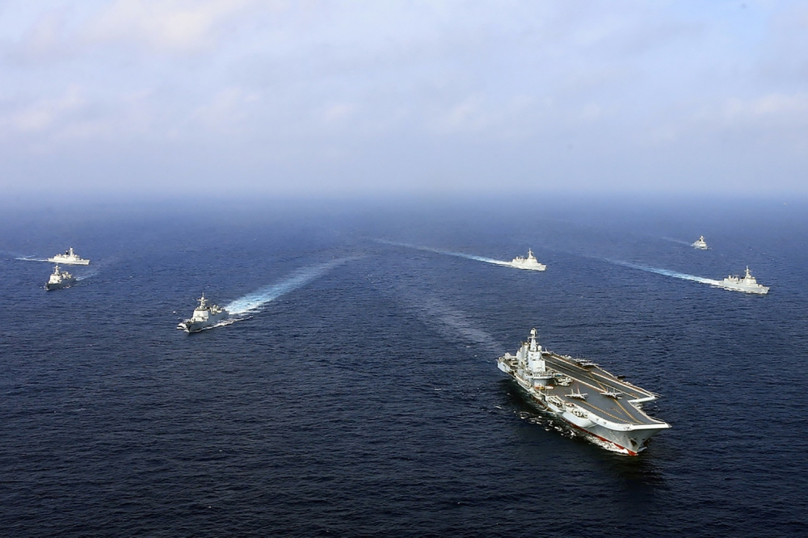

Is China Reshaping the Global Oceans Regime?
Image Credits https://foreignpolicy.com/2023/06/10/china-sea-south-east-maritime-claims-law-oceans-us-disputes/
In the summer of 2016, a Chinese navy vessel seized an underwater drone belonging to the United States Navy off the coast of the Philippines. The incident sparked a diplomatic row between the two nations, with the US accusing China of "unlawful seizure" and "unsafe and unprofessional" behavior.

The incident is just one example of China's increasingly assertive behavior in maritime matters, particularly in the South China Sea and the East China Sea. China claims almost the entire South China Sea, which is a major shipping lane and believed to be rich in resources. Its claims overlap with those of several other nations, including the Philippines, Vietnam, and Malaysia. China has also been involved in territorial disputes with Japan over the Senkaku/Diaoyu Islands in the East China Sea.
Implications of China's Actions
China's actions in the South China Sea and the East China Sea have significant implications for the international community and the global oceans regime.
- Reduced Freedom of Navigation: China's claims and assertive behavior threaten the principle of freedom of navigation, which is essential for international trade and commerce. The US has conducted several freedom of navigation operations in the South China Sea to challenge what it sees as China's excessive maritime claims.
- Increased Tension: China's actions have led to increased tension and conflict with other nations in the region, particularly the US. The US has increased its military presence in the region and strengthened its alliances with other nations such as Japan and the Philippines.
- Shift in Power Dynamics: China's actions have also led to a shift in the power dynamics of the region. China is now a major player in the global oceans regime and has the potential to challenge the dominance of the US and other Western powers.
Case Studies
Two case studies illustrate the impact of China's actions on the global oceans regime.
The South China Sea
China's claims to almost the entire South China Sea are based on the "nine-dash line", a vague demarcation line that encompasses nearly 90% of the sea. The line has been challenged by several nations, but China has refused to back down. China has built artificial islands in the South China Sea and has deployed military assets to them, leading to concerns about its intentions and capabilities.

The South China Sea is a crucial shipping lane and is believed to be rich in oil and gas reserves. It is also a major fishery. China's control over the region could have significant economic and strategic implications for other nations in the region and beyond.
The Senkaku/Diaoyu Islands
The Senkaku/Diaoyu Islands are a group of uninhabited islands in the East China Sea. Japan has administered the islands since the 19th century, but China claims sovereignty over them. The dispute over the islands has led to several incidents, including Chinese vessels entering Japanese waters and a collision between a Chinese fishing vessel and a Japanese Coast Guard ship in 2010.

The dispute over the islands has led to increased tension between Japan and China, and has drawn in the US, which has a defense treaty with Japan. The US has declared that the islands fall under the security treaty and would be defended by US forces if necessary, leading to further tensions with China.
Conclusion
- China's actions in the South China Sea and the East China Sea threaten the principle of freedom of navigation, increase tension and conflict with other nations, and shift the power dynamics of the global oceans regime.
- The South China Sea and the Senkaku/Diaoyu Islands are two major flashpoints in China's maritime disputes, with significant economic and strategic implications for the international community.
- The global oceans regime is at a crossroads, with China challenging the dominance of the US and other Western powers. The international community must find ways to peacefully resolve disputes and uphold the principles of international law and freedom of navigation.
Curated by Team Akash.Mittal.Blog
Share on Twitter Share on LinkedIn